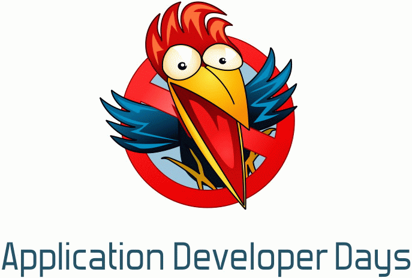

Application Developer Days - 2
Приглашаем Вас принять участие в работе конференции профессиональных программистов Application Developer Days, которая состоится 29-30 апреля 2011 в г. Санкт-Петербурге.
Это уникальное мероприятие, созданное экспертами в области разработки программного обеспечения, которое объединит на одной площадке отдельных профессионалов и целые ИТ-сообщества.
Application Developer Days, — единственная технологическая конференция, которая не будет ограничена какой-то определенной технологией или платформой.
Специалисты, использующие в своей работе самые разнообразные программные платформы и инструменты, смогут рассказать коллегам о своих проектах, обменяться опытом, узнать о новых подходах и возможностях.
Последнее время ИТ-конференции заполонили доклады по тематике управления специалистами и целыми командами, а также тонкостям и особенностям настраивания бесконечных процессов в работе программистов. Только в последний год появилась тенденция к возвращению истинно-технических конференций.
Application Developer Days пройдёт уже во второй раз. Предыдущая конференция прошла 23-24 сентября 2010 года в Ярославле и собрала большое количество положительных откликов. Конференция приобрела заслуженный авторитет ведущего мероприятия в СНГ по программной инженерии.
В списке ведущих докладчиков прошлого года присутствуют такие имена, как Олег Царёв, Кирилл Коринский, Станислав Фомин, Андрей Бибичев, Дмитрий Завалишин, Максим Лапшин, Дмитрий Завалишин, Илья Кантор и многие другие.
Конференция поддерживается лидерами индустрии высоких технологий, а также национальными ИТ ассоциациями.
В 2011 году в рамках Application Developer Days пройдет обсуждение целого спектра вопросов, связанных с созданием ПО, выбором языков программирования, рассмотрением успешных архитектурных решений и рекомендаций по их созданию, рассмотрением наиболее востребованных технологий, продуктов известных вендоров и Open Source решений.
Кроме непосредственно программистов, конференция будет интересна всем тем, кто вовлечен в процесс создания программных продуктов, кто хочет понять, чем живут разработчики, посмотреть на всё с точки зрения программиста.
Формат и программа конференции:
Конференция состоит из трех параллельных секций.
Продолжительность конференции — 2 дня.
Участников ждут:
- практические мастер-классы ведущих экспертов в программной инженерии;
- рассказы о примерах успешного решения задач в различных областях разработки ПО;
- доклады о результатах исследовательской работы;
- круглые столы и панельные дискуссии;
- презентации технических решений;
- и многое, многое другое.
Тематика докладов конференции:
- Практика решения конкретных прикладных задач;
- Архитектура ПО;
- Техники написания кода;
- Среды разработки;
- Технологии программирования;
- Тренды в области разработки ПО.
Официальная программа Конференции будет окончательно определена после конкурсного отбора докладов программным комитетом.
Приглашаем Вас выступить на конференции Application Developer Days
На конференцию принимаются доклады по вышеперечисленным темам, а также по иным темам, относящимся к инженерии программного обеспечения.
Авторы принятых секционных докладов освобождаются от уплаты организационного взноса за участие в конференции. В случае наличия нескольких соавторов от уплаты организационного взноса освобождается фактический докладчик.